终结AI 味的设计skill。
支持 Claude Code、Codex 与 OpenCode。一行命令即可安装。
npx skills add nutlope/hallmark -g


一句提示词，两种页面
左边，是 Opus 5.5 只凭提示词的产物；右边，同一句提示词做成的一张 Hallmark 主题页。

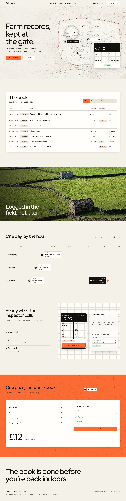
问题计数来自 Hallmark 的 linter。滚动可以通读两页，也可以拖动这条线。
先设计，再写码
从你的一句话到成品页面之间发生的事。
-
先问你要真实素材
你的照片、真实数字、应用的截图。它从不编造这些。
-
从 50 个主题里发牌
它挑三张贴合你提示词的主题。说一声定制，它就从零设计。
-
从零排布整个页面
区块和它们的顺序，每一次构建都不一样。
-
自查自己的成果
它在真实浏览器里 lint 页面，再用全新的视角评审一遍。


五十个主题打底
每一个都是一种纸、一套字、一块色板和一种处理照片的方式。版面怎么排，交给构建本身。
 Refract
Refract Cobalt
Cobalt Dusk
Dusk Vantage
Vantage Furrow
Furrow Studio
Studio Atelier
Atelier Ribbon
Ribbon Dose
Dose Coral
Coral Almanac
Almanac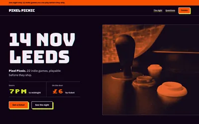
Arcade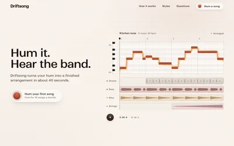
Bloom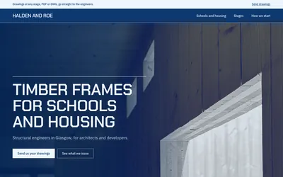
Blueprint Broadside
Broadside Brutal
Brutal Carnival
Carnival Console
Console Darkroom
Darkroom Editorial
Editorial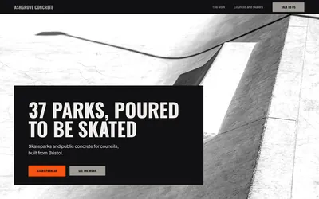
Formwork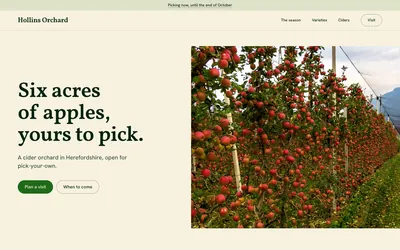
Garden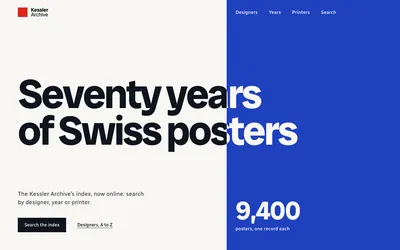
Grid Halftone
Halftone Hedgerow
Hedgerow Hum
Hum Ink
Ink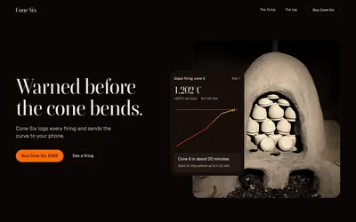
Kiln Loom
Loom Lumen
Lumen Manifesto
Manifesto Midnight
Midnight Newsprint
Newsprint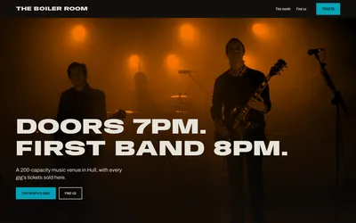
Overprint Paste-up
Paste-up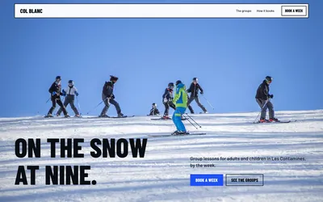
Piste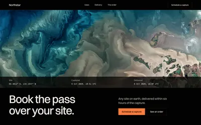
Rim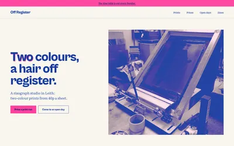
Riso Solstice
Solstice Specimen
Specimen Spore
Spore Sport
Sport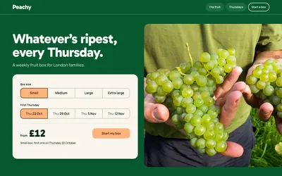
Squeeze Sticker
Sticker Terminal
Terminal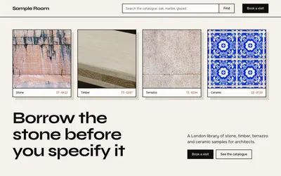
Terrazzo Ultraviolet
Ultraviolet Vellum
Vellum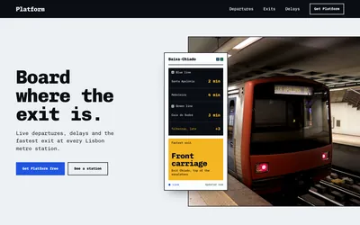
Wayfind Werkstatt
Werkstatt
同一主题，不同的页面
Kiln 里跑了两句提示词，Midnight 里也是。每次构建都选了自己的骨架。


常见问题
它需要 API key 吗？
不需要。照片来自它自带的开放许可图库。图像服务的 key 是可选项。
它能重设计我已有的网站吗？
可以，只要你指名道姓：/hallmark redesign ./site。它保留你的内容、链接和表单，重做页面的样子。它绝不会自作主张去动一个已存在的网站。
我可以跳过主题吗？
可以。要一张定制页面，它就只凭你的提示词设计，遵守同一套规则与检查。
它能展示我真实的应用吗？
可以。把 URL 或目录给它，它会自己把应用跑起来并截图。
它能遵守我的设计系统吗？
可以。在设计任何东西之前，它会先读你的 token 和 design.md。
照片是从哪来的？
Wikimedia Commons 上的开放许可照片，每一页用到的地方都有署名。
两个人会得到同一张页面吗？
不会。每一次构建都抽自己的骨架、hero、导航和页脚。
用 Hallmark 做的页面
构建与主题页，每张都来自一句提示词。拖动转盘四处看看。